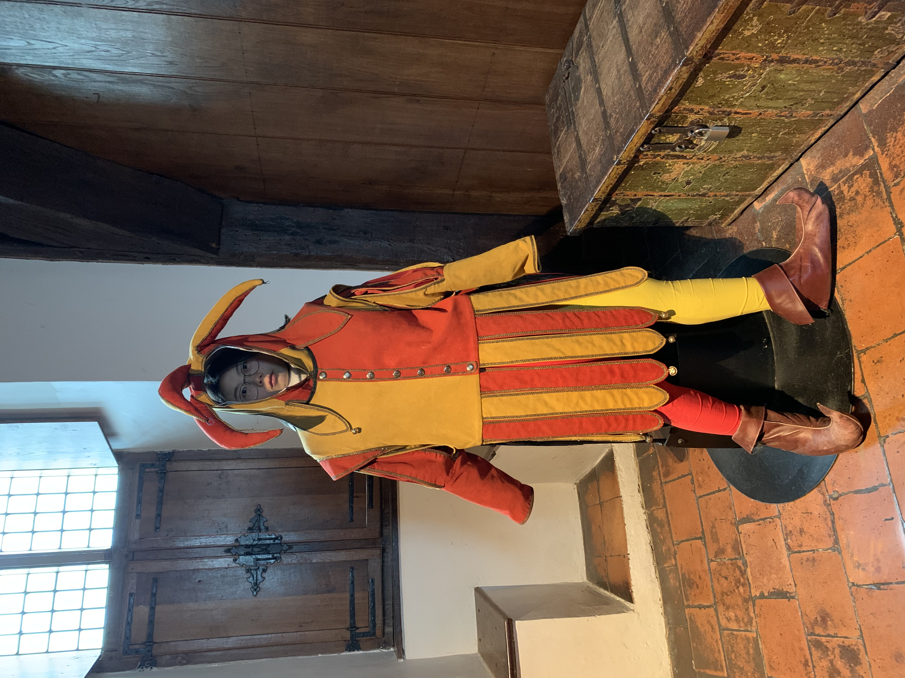
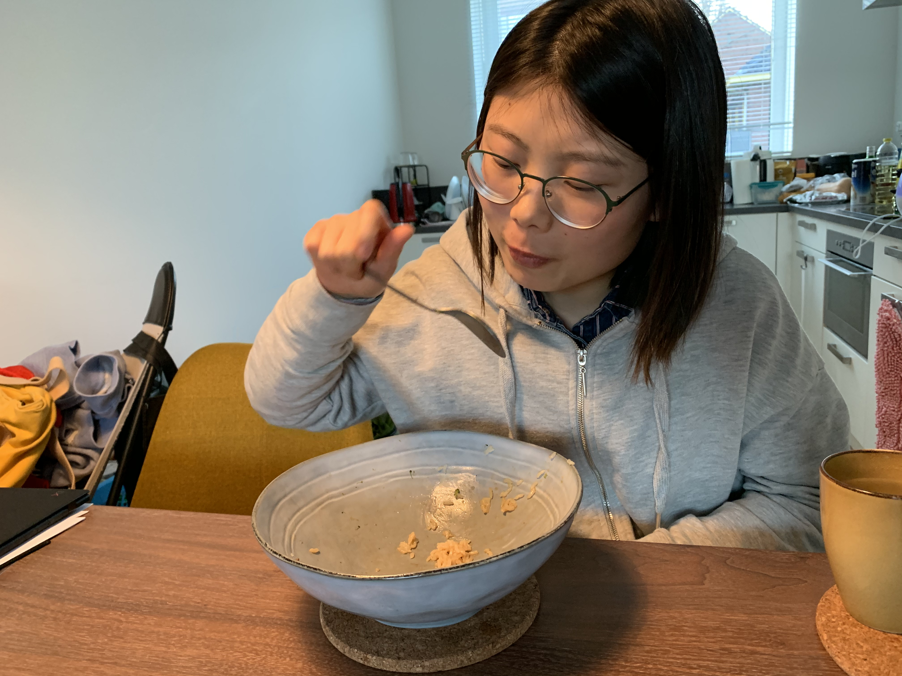
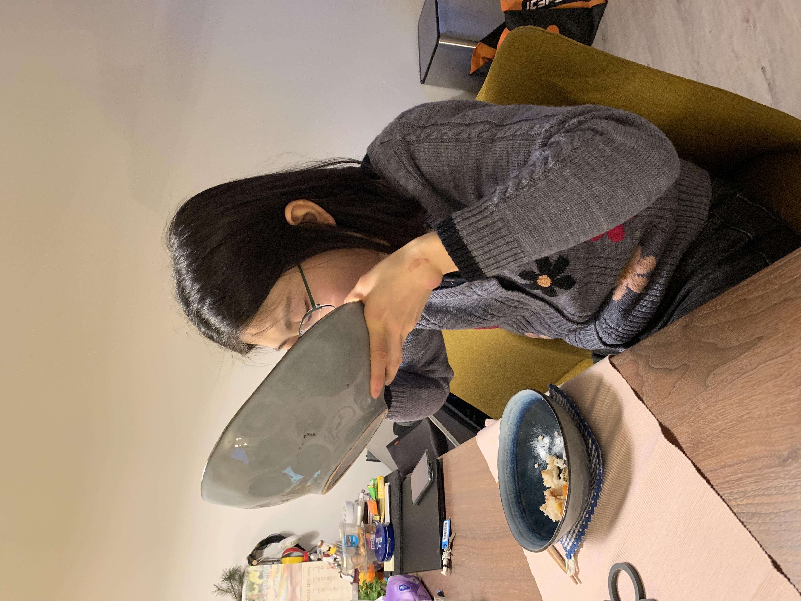
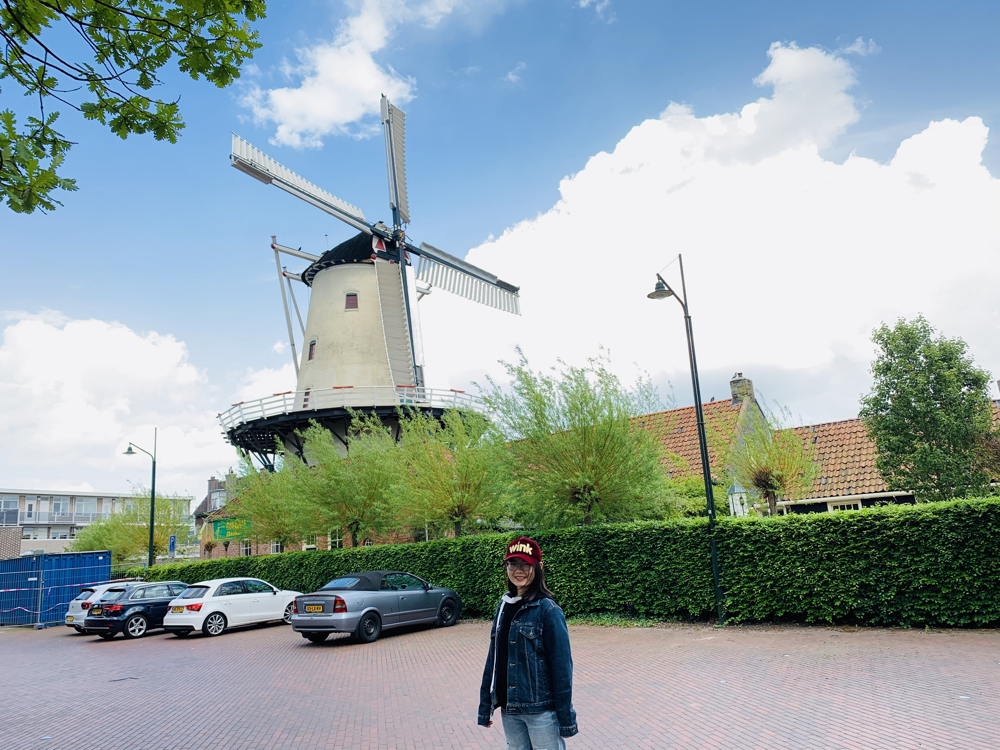
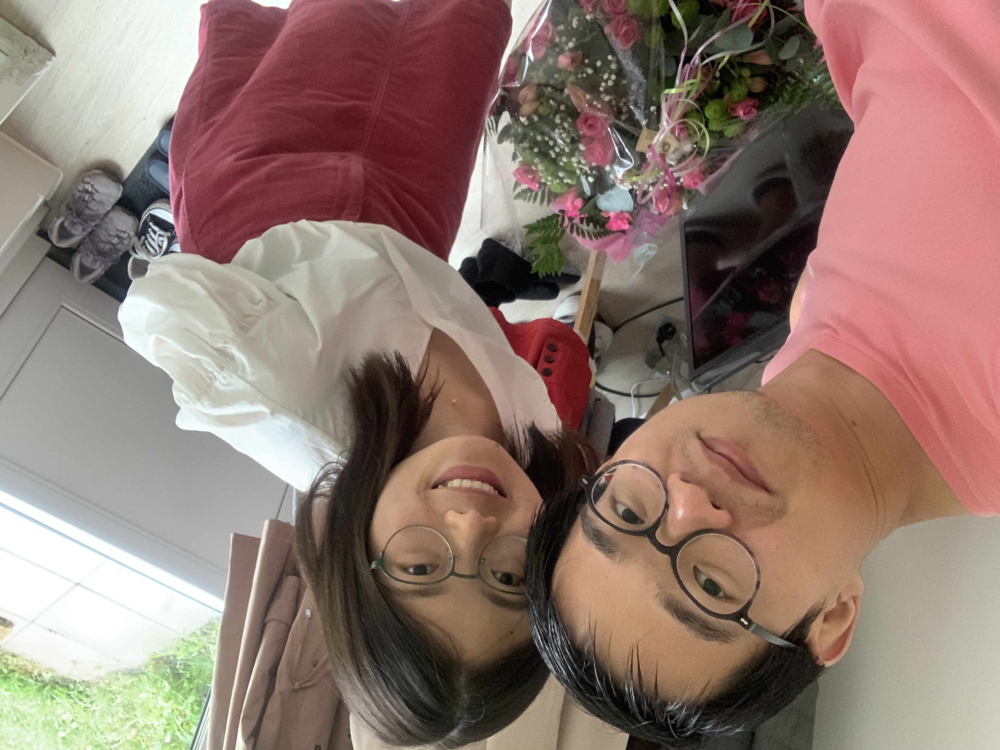
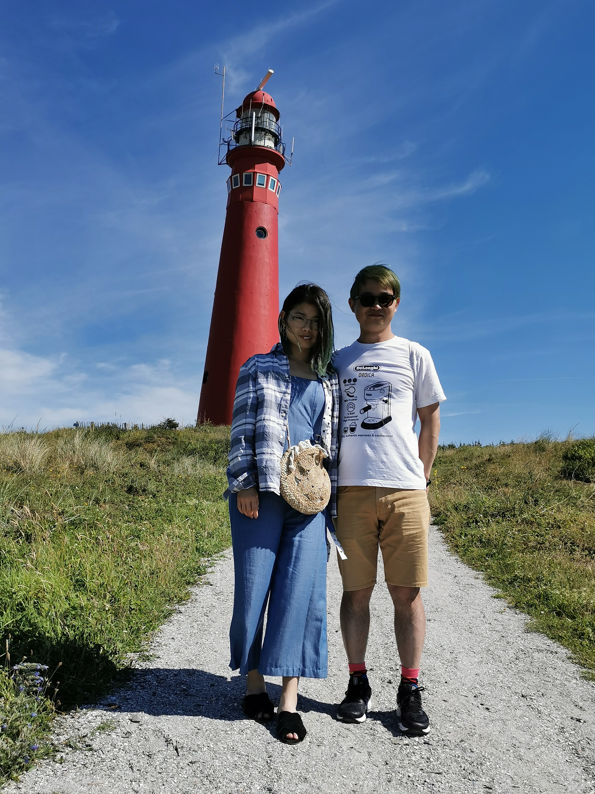
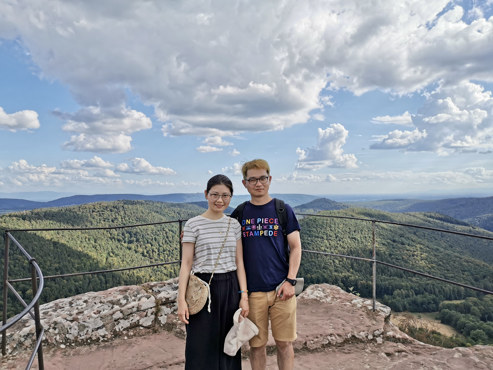
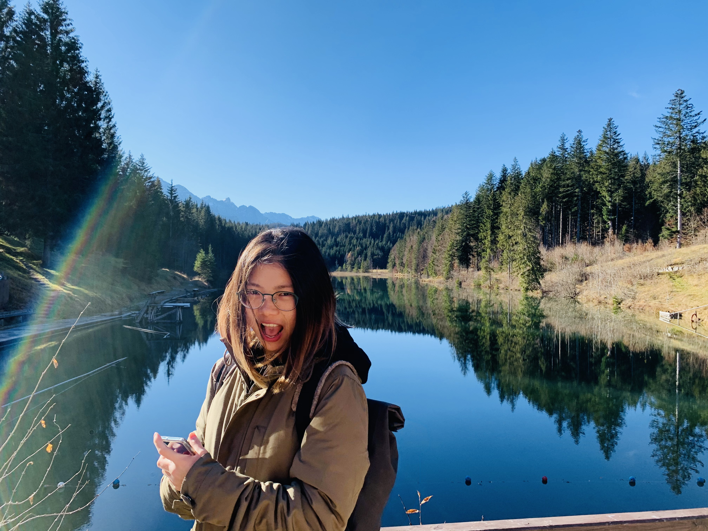
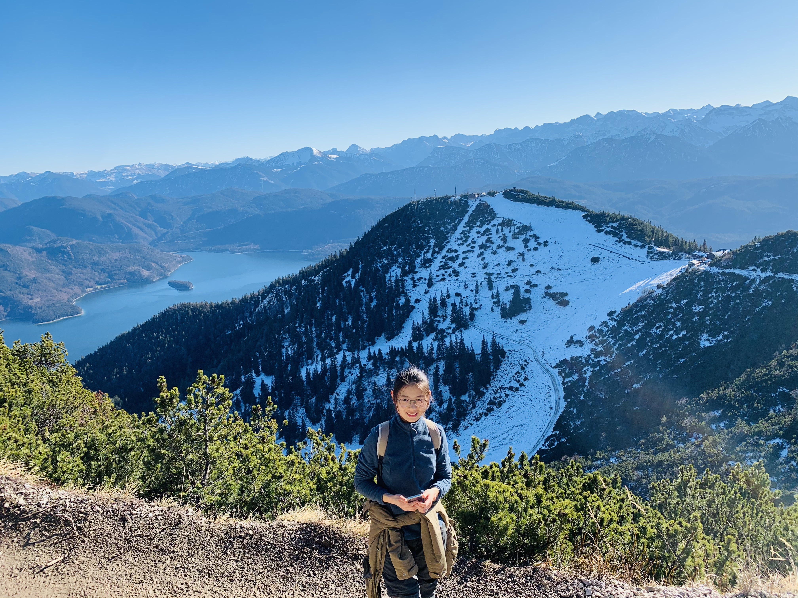

2020
|  | March 8 🇳🇱 我宝贝这大变小丑 🤡 可是一点也不凶凶呀 😉😉😉 PS. 我记得是从阿姆租了 GreenWheels 开过去的？可是当时为啥去阿姆，貌似还住在 lzx 家？
@Muiden |
|  | March 26 🇳🇱 这是什么这么好次😋啊？？？ 这么一大碗都干完了 😯😯😯 @Merelstraat |
|  | April 8 🇳🇱 宝贝那会儿的胃口真不错，你看看，滋滋滋 😏😏😏 @Merelstraat |
 |
April 26 🇳🇱 jjj 你好讨厌啊， 天天都偷拍我 - 还拍的 🌶️ 么吼看 🤩🤩🤩 @Bourtange |
 |
April 27 🇳🇱 rzw: 人有鸡头 🐔 稳定系统，我有青蛙 🐸 式拍照防抖 @National Park De Alde Feanen |
|  | May 23 🇳🇱 嘿嘿嘿，憨憨 👧 终于混到了一张和风车的合照了 👻👻👻
@Haren |
|  | - July 4 - 🇳🇱 Yeah，第一年考核达标 🥳🥳🥳
@Merelstraat |
 |
July 18 🇳🇱 我宝贝承包了整个鱼塘后的喜悦之情 😀 全部包含在这个手势里了 ✌️✌️✌️
@National Park Veluwezoom |
|  | July 31 🇳🇱 绿头 👧 和 绿头 👦
PS. 啥时候再来一波别的颜色啊，你宝贝已经开始蓄头发了 🤟🤟🤟 @Schiermonnikoog |
|  | Aug. 15 🇩🇪 So our “Pandamic Europe Tour” began here? 当时可是费了不少我宝贝的口水 💦 才说服的你宝贝粗门 🉑️ @Auchan |
 |
Aug. 16 🇩🇪 曾梦想仗剑 🗡️ 走天涯，看一看世界的繁华 🧗🏼♀️ @Eppenbrunn |
 |
Aug. 17 🇫🇷 得亏机智的宝贝，出来逛逛，到处都是被自己承包的景色 - 天气正好！ ☀️☀️☀️ @Colmar |
 |
Aug. 18 🇱🇺 卢森堡的阿道夫桥 Pont Adolphe 也就将将够格给我宝贝做背景墙 😼😼😼
@Luxembourg |
|  | Nov. 14 🇩🇪 好几个月了，难得出来放个风，你看把狗子 🐶 给开心的 😄😄😄 @Barmsee |
|  | Nov. 28 🇩🇪 这里确实hǐn不错啊 - 宝贝跟我来这附近没有 🔟 次也有个 8️⃣ 次吧？ @Kochel am See |